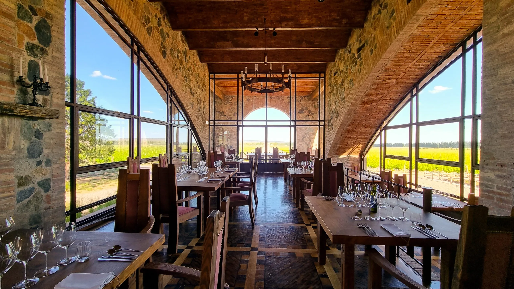
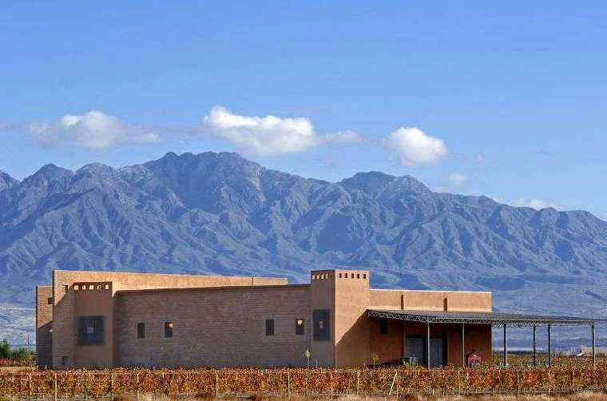
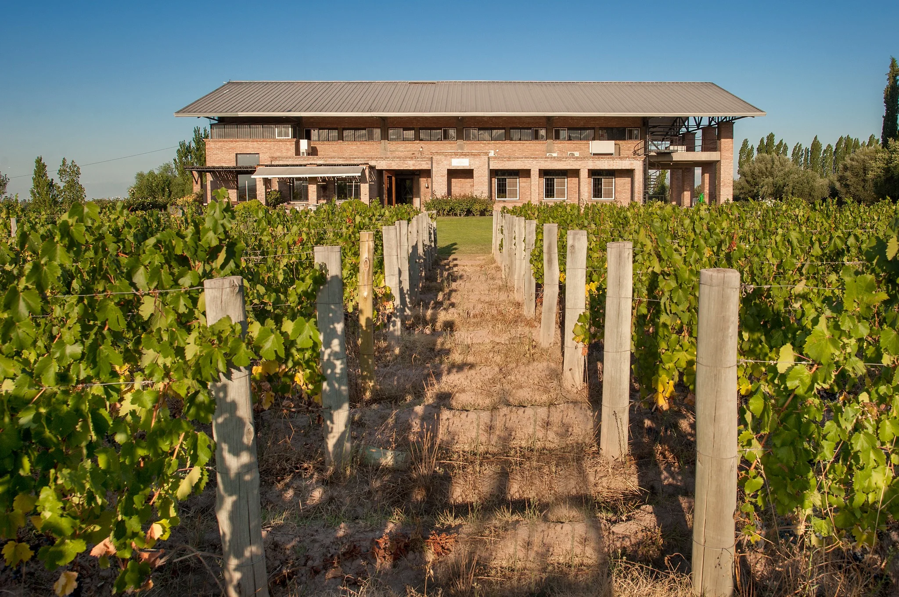
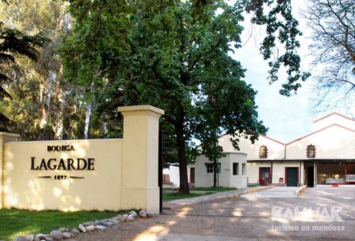

TOUR CATENA FANS
Descripcion
Los grandes vinos nacen en el viñedo. Nuestra visión consiste en elaborar vinos intensos e inolvidables, verdaderamente expresivos del terroir. La Familia es todo.
ITINERARIO
Catena Zapata “Blending Game” visita y degustación
En esta actividad jugaremos "Maestros del Blanding" creando nuestros propios cortes mientras disfrutamos de una experiencia memorable.
Restaurante Angelica catena almuerzo
Con una impronta medieval que remonta a un borgo italiano estrechamente vinculado con sus raíces, la familia Catena Zapata sigue escribiendo su historia y la del vino argentino y completó uno de los grandes anhelos de los amantes de la bebida y gastronomía mendocina: su propio restaurante. Emplazado en Agrelo, en la misma finca en la se encuentra su mítica bodega La Pirámide, abrió sus puertas el exclusivo Angélica, Cocina Maestra
TOUR PALADARES EXIGENTES

Descripcion
BODEGA SOTTANO almuerzo
En Sottano, vivirás una experiencia inolvidable, parrila argentina y sus exquisitos vinos, todo con la jestuosa Cordillera de los Andes como telon de fondo. En un entorno único, donde cada copa de vino se convierte en un momento especial
ITINERARIO
Bodega Pulenta Estate visita y degustación
No se caracteriza por producir vinos a la moda o para llamar la atención, son vinos de alta gama iconos en el mundo
Bodega Viña Cobos visita y degustación
Vinos que expresan naturalmente el terruño del que provienen. Destacados por su elegancia, potencial y equilibrio, resultado de un cuidado minucioso de los viñedos, donde el trabajo artesanal y el respeto del terroir son premisas fundamentales.

BODEGA SOTTANO almuerzo
En Sottano, vivirás una experiencia inolvidable, parrila argentina y sus exquisitos vinos, todo con la jestuosa Cordillera de los Andes como telon de fondo. En un entorno único, donde cada copa de vino se convierte en un momento especial
TOUR NUEVO Y ANTIGUO MUNDO DEL VINO

Descripcion
Cuando usamos el termino viejo mundo nos referimos básicamente a Europa y sus vinos, mientras que el termino nuevo mundo se reserva para los vinos de America, Sudafrica y Oceanía. En esta experiencia tendrá la oportunidad de probar los sabores y la personalidad de un terroir clásico y tradicional. Este es el punto de partida para de allí saltar a los terroirs de aventura y descubrimiento Es un camino que va desde suelos tradicionales a otros inexplorados, de los más jóvenes a los más antiguos El vino puede cambiar el Mundo.
ITINERARIO
Bodega Budeguer visita y degustación
Bodega boutique, arquitectura moderna, racionalista, elevada sobre un espejo de agua, mirando hacia la imponente cordillera de los andes
Bodega Achaval Ferrer visita y degustación
Una visita al pasado, pero en el presente. Un encuentro con paisajes y vinos deslumbrantes. Somos guardianes de un legado
Bodega Lagarde almuerzo
La buena cocina comienza en la tierra, menú de pasos con una experiencia única rodeados de naturaleza con excelentes vinos
